Offres clarifiées, blocs pratiques, CTA et liens entre services.
+34 %
de clics depuis Google
×2,3
de taux de clic
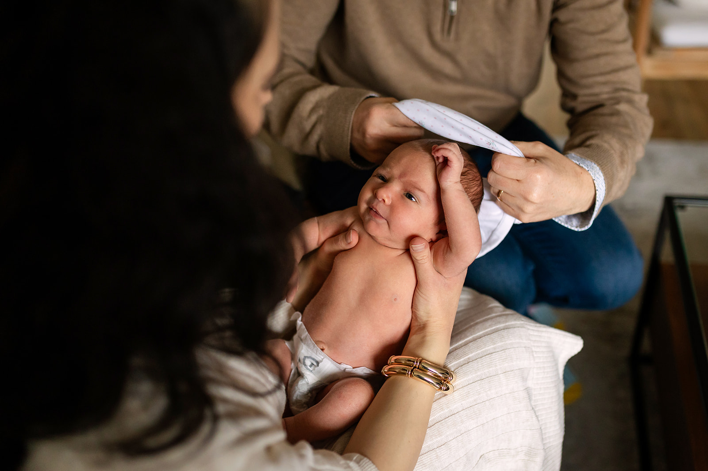
Les pages Newborn, Baby, Family au centre du travail du mois
de clics depuis Google
de taux de clic
Google Search Console · recherche Web · 28 derniers jours jusqu'au 13 octobre, comparés à la période précédente.
Google Search Console · clics des 28 derniers jours contre les 28 précédents. Accueil : 3 mois jusqu'au 12 septembre, puis 28 jours jusqu'au 13 octobre.
| Mot-clé | 26 juin | 14 sept | 16 oct | Depuis le lancement |
|---|---|---|---|---|
| dublin family photographer | 26 | 18 | 15 | +11 places |
| family photoshoot dublin | 23 | 16 | 12 | +11 places |
| outdoor family photography | 29 | 21 | 15 | +14 places |
| family photography dublin | 10 | 14 | 8 | +2 places |
| lifestyle family photography | 38 | 51 | 21 | +17 places |
Position Google, moteur géolocalisé Dublin. Plus le chiffre est bas, mieux c'est.
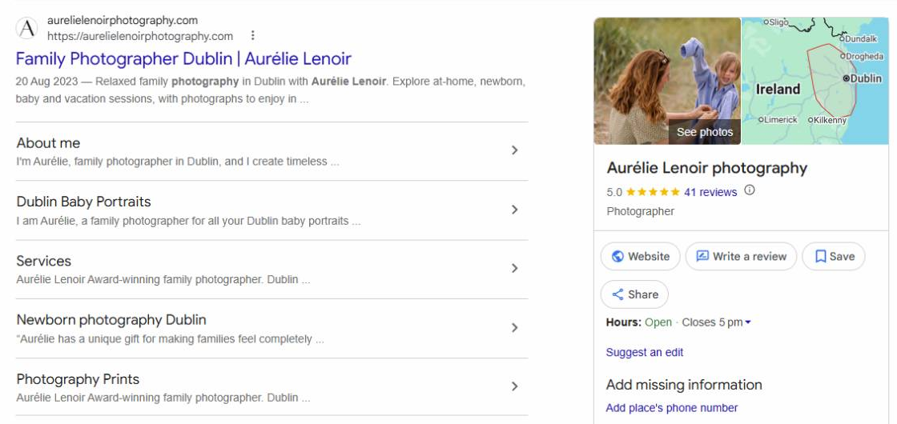
Sur la recherche « Aurélie Lenoir Photography », la fiche Google s'affiche à droite des résultats.
Sous le site : Dublin Baby Portraits, Services, Newborn photography Dublin.
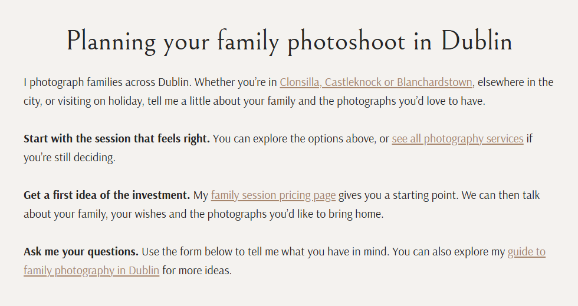
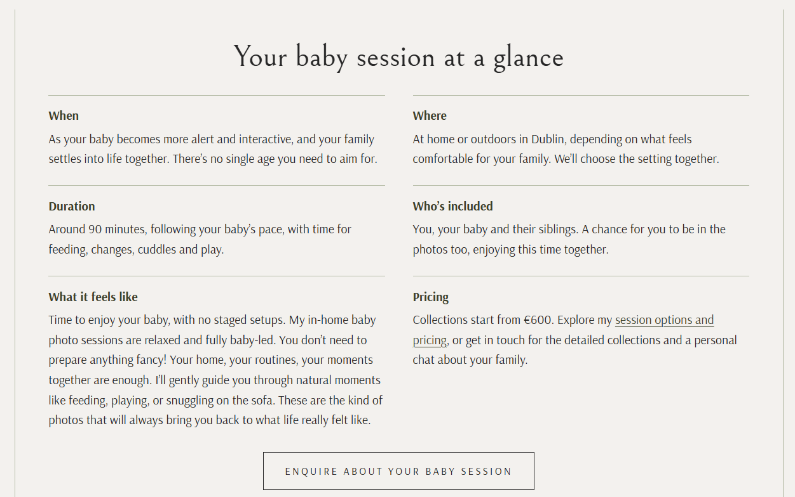
Offres clarifiées, blocs pratiques, CTA et liens entre services.
Nouveau H1, récapitulatif « Your session at a glance », FAQ et maillage.
Sur toutes les pages, avec un balisage Rank Math vérifié.
Image principale et carrousel de l'accueil stabilisés.
Test PageSpeed après correction. Les résultats varient d'un test à l'autre.
14 articles Family mesurés, 3 humanisés et publiés. 6 classés par priorité pour la suite, le guide Family en premier.
À chaque article humanisé et chaque page créée, des liens internes ajoutés ou corrigés.
Outil de maillage installé, pages classées par importance.
Prospection et suivi poursuivis, angles d'articles invités préparés pour Vacation Photography.
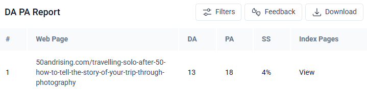
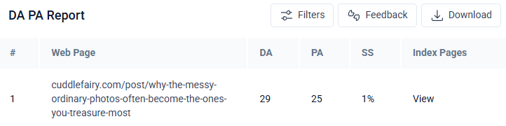
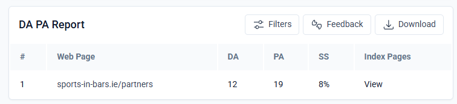
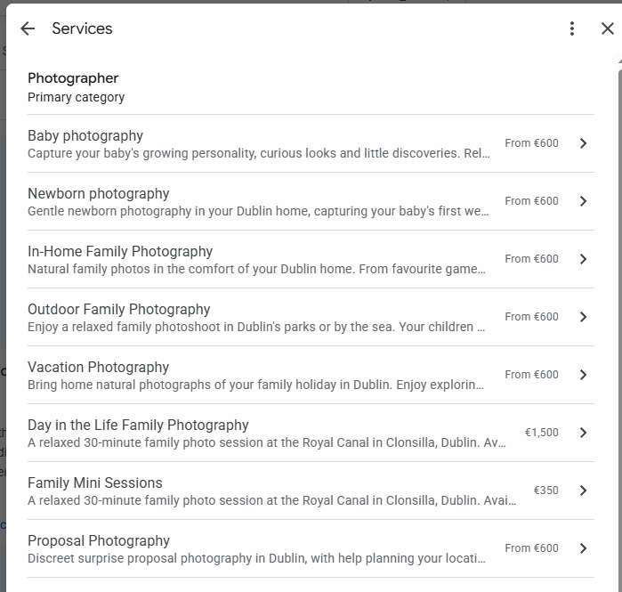
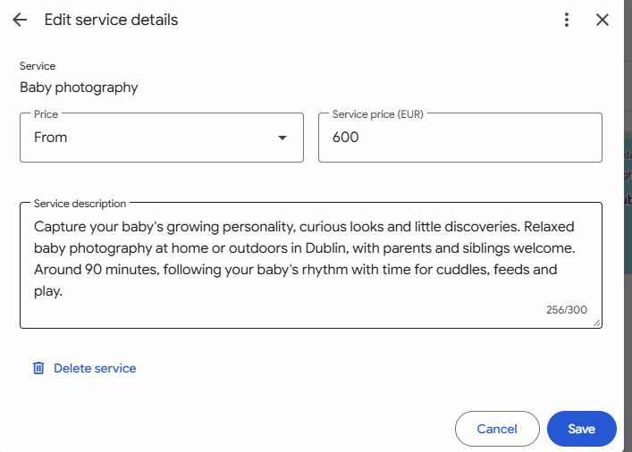
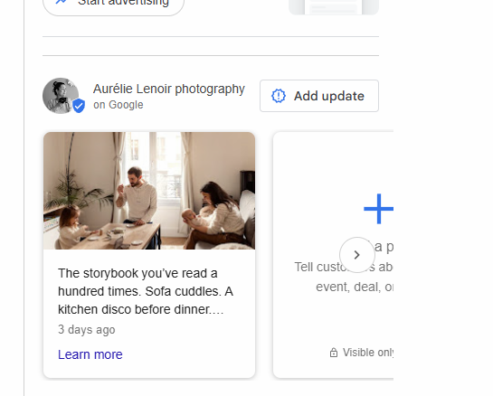
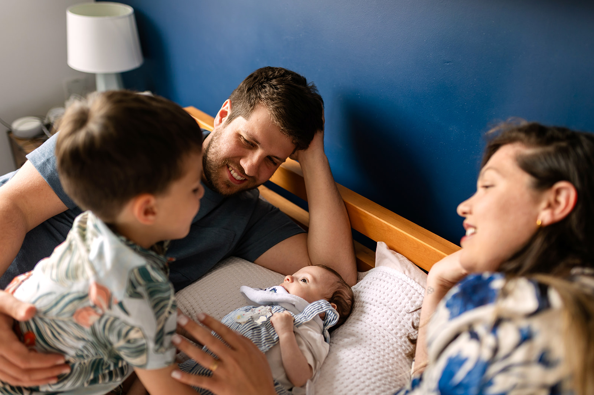